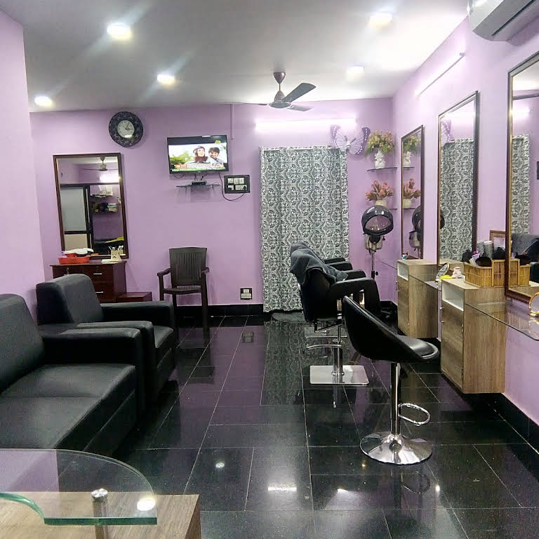

About Our salon

A beauty salon is an establishment that offers a variety of cosmetic treatments and cosmetic services for men and women. Beauty salons may offer a variety of services including professional hair cutting and styling,manicures and pedicures, and often cosmetics, makeup and makeovers.A beauty salon or beauty parlor is an establishment that provides cosmetic treatments for people.Other variations of this type of business include hair salons, spas, day spas, and medical spas.
- Beauty treatments
-
- Massage for the body is a beauty treatment, with various techniques offering benefits to the skin (including the application of beauty products) and increasing mental well-being.[2] Hair removal is offered at some beauty salons through treatments such as waxing and threading. Some beauty salons also style hair instead of requiring clients to go to a separate hair salon. Some also offer sun tanning via tanning beds.
- Another popular beauty treatment specific to the face is known as a facial. The perceived effects of a facial mask treatment include revitalization, healing, or refreshment of the skin. They may yield temporary benefits depending on environmental, dietary, and other skincare factors. Although customers seek out these services for anti-aging or anti-inflammatory results, there is little to no objective evidence that there are any long-term benefits to the various available facial treatments.
- Specialized beauty salons known as nail salons offer treatments such as manicures and pedicures for the nails. A manicure is a treatment for the hands that involves trimming and filing of the fingernails and softening the cuticles in preparation for the application of nail polish. A pedicure is a treatment for the feet that involves trimming and filing of the toenails in preparation for the application of nail polish, as well as the softening or removal of calluses.